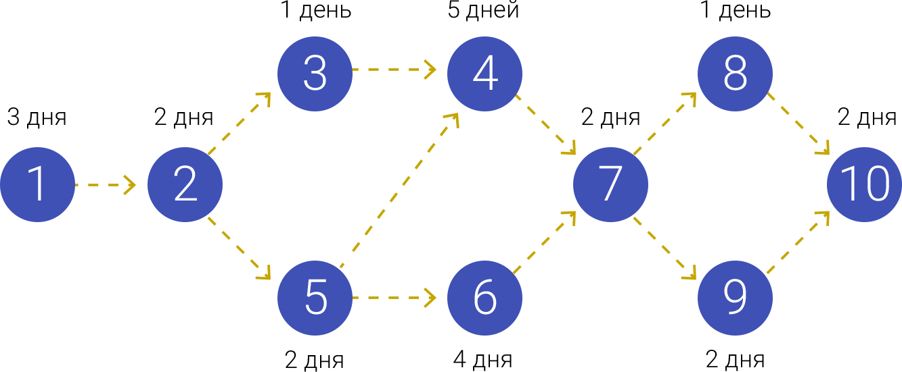

Расписания можно представить в разных видах
, самые популярные виды — это сетевая диаграмма с длительностями, диаграмма контрольных точек и диаграмма Ганта.
Сетевая диаграмма с длительностями
Назначение:
для контроля логики проекта
Пример сетевой диаграммы с длительностями был рассмотрен ранее в разделе
Построение сетевой диаграммы.
